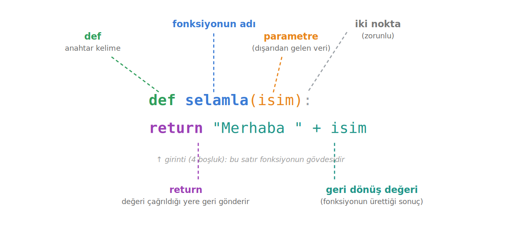

Python'da Fonksiyonlar
Bir fonksiyon, bir kez tanımlayıp sonra istediğiniz zaman, istediğiniz veriyle yeniden çağırabildiğiniz bir kod bloğudur. Bu sayfa def ile fonksiyon tanımlamayı, parametre ve argümanları, return ile değer döndürmeyi ve değişkenlerin yerel/global kapsamını anlatır.
Bu sayfada
1Fonksiyonlar neden vardır?
Bir öğrencinin not ortalamasını hesapladığınızı düşünün: notları topluyor, sayıya bölüyor, sonucu ekrana yazıyorsunuz. Sonra ikinci bir öğrenci geliyor ve aynı işlemi baştan yapmanız gerekiyor. Her seferinde aynı satırları tekrar tekrar yazmak hem yorucudur hem de her kopyalamada yeni bir hata yapma ihtimaliniz artar. Bir hata fark ettiğinizde ise onu kodun her bir kopyasında ayrı ayrı düzeltmeniz gerekir.
İşte fonksiyonlar tam da bu sıkıntıyı ortadan kaldırmak için vardır. Bir fonksiyon, bir kez tanımladığınız ve sonra istediğiniz zaman, istediğiniz veriyle yeniden çağırabildiğiniz bir kod bloğudur. Fonksiyonların bize kazandırdığı üç şey vardır: kod tekrarını engellerler, karmaşık bir işlemi tek bir anlamlı isim altında toplayarak soyutlama sağlarlar ve bir değişiklik gerektiğinde tek bir yeri düzeltmek yettiği için bakım kolaylığı getirirler.
1.1 İki tür fonksiyon
| Tür | Açıklama | Örnekler |
|---|---|---|
| Gömülü Fonksiyonlar (built-in functions) | Python'un hazır olarak sunduğu fonksiyonlar | print(), type(), len(), int(), range() |
| Kullanıcı Tanımlı Fonksiyonlar (user-defined functions) | Programcının kendi ihtiyacına göre def ile yazdığı fonksiyonlar | topla(), selamla(), alan_hesapla() |
print() ya da len() gibi gömülü fonksiyonları çağırmak için onları tanımlamanıza gerek yoktur; Python sizin için hazır vermiştir. Bu bölümde öğreneceğimiz şey ise ikinci gruptur: kendi fonksiyonlarımızı nasıl yazacağımız.
Makineyi bir kez kurarsınız; sonra her kahve istediğinizde sıfırdan bir makine yapmazsınız, sadece düğmeye basarsınız. İçinde suyun nasıl ısıtıldığını bilmek zorunda değilsiniz. Düğmeye basmak fonksiyonu çağırmak, koyduğunuz malzeme parametre, çıkan kahve ise geri dönüş değeridir.
2Fonksiyonların tanımlanması
Bir fonksiyonu tanımlamak için def anahtar kelimesiyle başlarız. Genel kalıp şudur:
def fonksiyon_adi(parametre1, parametre2, ... ):
# Fonksiyon bloğu
# Yapılacak işlemler
return deger # opsiyonel (geri dönüş değeri)
def anahtar kelimesi Python'a "burada bir fonksiyon tanımlıyorum" der. Hemen ardından gelen fonksiyon adı, değişken adlandırma kurallarına uyar. Parantezlerin içine parametreleri yazarsınız; fonksiyon dışarıdan veri almayacaksa parantez boş kalır. Satır sonundaki iki nokta zorunludur ve onu girintili yazılan fonksiyon gövdesi takip eder. En sondaki return ise isteğe bağlıdır.

2.1 Önce tanım, sonra çağrı
Bir fonksiyonu yalnızca tanımladığınızda ekranda hiçbir şey görmezsiniz; tanım fonksiyonu çalıştırmaz, sadece hazırlar. Tıpkı kahve makinesini kurmuş ama henüz düğmesine basmamış olmanız gibi. Üstelik Python kodu yukarıdan aşağıya okur; henüz tanımını görmediği bir fonksiyonu çağırırsanız onu tanımaz ve hata verir.
merhaba("hasan") # ❌ NameError: name 'merhaba' is not defined
def merhaba(ad):
print("merhaba {}".format(ad))
merhaba("hasan") # ✅ Ekran: merhaba hasan
| Yazım | Anlamı |
|---|---|
merhaba | Fonksiyonun kendisi (bir nesne) |
merhaba() | Fonksiyonun çağrılması (çalışması) |
Parantezsiz yazım fonksiyonu çalıştırmaz, yalnızca ona bir referans verir. Fonksiyonun gerçekten çalışması için sonuna parantez koymanız gerekir.
3Fonksiyonların çağrılması
Bir fonksiyonu çağırmak, adını yazıp parantez içinde ona gerekli değerleri vermekten ibarettir: fonksiyon_adi(argüman1, argüman2, ... ). Şimdi iki sayıyı toplayıp sonucu geri döndüren bir fonksiyon yazalım:
def topla(sayi1, sayi2):
toplam = sayi1 + sayi2
return toplam
topla(3, 5) # 8
sonuc = topla(3, 5)
print(sonuc) # 8
topla(3, 5) çağrısı geriye 8 değerini döndürür. Bu değeri bir değişkene atayıp programın başka yerlerinde kullanabilirsiniz. return, fonksiyonun ürettiği sonucu dışarı taşır.
Küçük bir ayrıntı: + operatörü hem sayılarda hem metinlerde çalıştığı için aynı fonksiyon topla("python", "programlama") çağrısında birleştirme yapar ve "pythonprogramlama" üretir. Ama bu esneklik her operatörde yoktur; çarpma yapan bir fonksiyona iki metin verilirse TypeError: can't multiply sequence by non-int of type 'str' hatası alınır. Fonksiyona gönderdiğiniz verinin tipi önemlidir.
4Parametreler ve argümanlar
Parametre, fonksiyonu tanımlarken parantez içine yazdığınız değişkendir; fonksiyonun dışarıdan ne tür veri beklediğini söyleyen yer tutuculardır. Argüman ise fonksiyonu çağırırken o parametrelere karşılık verdiğiniz gerçek değerdir. Kısacası parametre tanımda, argüman çağrıda yer alır: def topla(sayi1, sayi2) tanımındaki sayi1 ve sayi2 birer parametre, topla(3, 5) çağrısındaki 3 ve 5 ise birer argümandır.
4.1 Konumsal ve isimli argümanlar
Argümanları sırayla yazdığınızda, bunlar parametrelere tanımlandıkları sırayla eşleşir: ilk argüman ilk parametreye, ikinci argüman ikinci parametreye gider.
def personel_yazdir(ad, soyad, yas):
print("personelin adi :", ad)
print("personelin soyadı :", soyad)
print("personelin yas :", yas)
personel_yazdir("hasan", "karaisalı", 12)
personel_yazdir("hasan", 12, "karaisalı") # ⚠ sıra bozuk → yaş yerine "karaisalı" yazılır!
personelin adi : hasan personelin soyadı : karaisalı personelin yas : 12
Son satırda sıranın bozulduğuna dikkat edin: 12 artık soyad'a, "karaisalı" ise yas'a gitmiştir. Python bunu hata olarak görmez, çünkü teknik olarak geçerlidir; ama sonuç mantıksız olur. Bu karışıklıktan kurtulmanın yolu, argümanı parametre adıyla birlikte vermektir. personel_yazdir(ad="hasan", soyad="karaisalı", yas=12) ile personel_yazdir(ad="hasan", yas=12, soyad="karaisalı") aynı sonucu verir; isimli argümanda sıra önemini kaybeder.
4.2 Varsayılan parametre değerleri
Bir parametreye varsayılan bir değer atanmamışsa, fonksiyonu çağırırken o argümanı mutlaka vermeniz gerekir; eksik bırakırsanız TypeError: missing 1 required positional argument gibi bir hata alırsınız. Oysa bir parametrenin çoğu zaman aynı değeri alacağını biliyorsanız ona varsayılan değer atayabilirsiniz; çağrıda o argüman verilmezse Python varsayılanı kullanır.
def personel_yazdir2(ad='ahmet', soyad='taşçı', yas=12):
print("personelin adi :", ad)
print("personelin soyadı :", soyad)
print("personelin yas :", yas)
personel_yazdir2() # tüm varsayılanlar kullanılır
personel_yazdir2("mehmet") # sadece ad değişir
personel_yazdir2(yas=25) # sadece yas değişir
Varsayılan değerli parametreler her zaman sona yazılır. Örneğin def hatali(mesaj="Merhaba", isim): yazımı SyntaxError verir; doğrusu, varsayılansız parametreyi öne almaktır: def dogru(isim, mesaj="Merhaba"):
5return ile değer döndürmek
return ifadesi, fonksiyon işini bitirdiğinde ürettiği değeri çağrıldığı yere geri göndermesini sağlar. Bu sayede sonucu bir değişkende saklayabilir, programın başka yerlerinde kullanabilirsiniz. return olmasaydı, fonksiyon içinde hesapladığınız değer fonksiyon bitince yok olur, dışarı çıkamazdı.
Bir fonksiyon birden fazla değeri aynı anda da döndürebilir; değerleri virgülle ayırmanız yeterlidir. Bu durumda geriye tek bir tuple (demet) döner: return a + b, a * b yazan bir fonksiyon (7, 12) gibi bir demet verir. Bu değerleri toplam, carpim = topla_carp(3, 4) biçiminde tek tek değişkenlere de ayırabilirsiniz; buna tuple unpacking (demet ayrıştırma) denir.
5.1 print ile return aynı şey değildir
Yeni başlayanların en çok karıştırdığı konu budur. print bir değeri ekrana yazar ama onu geri döndürmez; return ise değeri geri döndürür ama ekrana hiçbir şey yazmaz.
print(x) | return x | |
|---|---|---|
| Ekrana yazar mı? | ✅ Evet | ❌ Hayır |
| Değer döndürür mü? | ❌ Hayır | ✅ Evet |
| Fonksiyon devam eder mi? | ✅ Evet, sonraki satıra geçer | ❌ Hayır, fonksiyon biter |
| Sonucu başka yerde kullanılabilir mi? | ❌ Hayır | ✅ Evet |
def kare_v1(x):
print(x * x) # ekrana yazar (void fonksiyon)
def kare_v2(x):
return x * x # değer döndürür
a = kare_v1(5) # Ekran: 25
b = kare_v2(5) # Ekran: (hiçbir şey)
print("a:", a)
print("b:", b)
25 a: None b: 25
İçinde hiç return bulunmayan fonksiyona void fonksiyon denir (Python'un resmî terimi değildir; diğer dillerden gelen gayriresmî bir addır). Böyle bir fonksiyon bittiğinde Python sanki orada görünmez bir return None varmış gibi davranır; bu yüzden kare_v1 ekrana 25 yazdığı hâlde a değişkeni None olur. kare_v2 ise ekrana hiçbir şey yazmaz ama geriye 25 döndürür. Kısacası: bir değeri sadece görmek istiyorsanız print, o değeri sonradan kullanacaksanız return kullanırsınız.
5.2 return fonksiyonu bitirir
return çalıştığı anda fonksiyon tamamen sona erer. Ondan sonra yazılmış satırlar asla çalışmaz; bunlara "ölü kod" denir. Bu özellik aslında çok işe yarar; fonksiyondan erken çıkmak için kullanılır.
def kontrol(yas):
if yas < 18:
return "Reşit değil"
return "Reşit" # ilk return çalıştıysa buraya hiç gelinmez
print(kontrol(15)) # Reşit değil
print(kontrol(20)) # Reşit
6Değişken kapsamı: yerel ve global
Bir değişkenin programın her yerinden mi yoksa yalnızca belirli bir yerden mi görünür olduğu, o değişkenin kapsamı (scope) ile belirlenir. Bir fonksiyonun içinde tanımlanan değişkenler yerel değişkenlerdir: yalnızca o fonksiyona aittirler ve fonksiyon bitince bellekten silinirler. Bu yüzden fonksiyon içinde tanımlanan bir a değişkenine dışarıdan print(a) ile erişmeye çalışırsanız NameError alırsınız. Fonksiyonun parametreleri de yereldir.
Fonksiyonun dışında, programın ana gövdesinde tanımlanan değişkenler ise global değişkenlerdir; bunlara programın her yerinden erişebilirsiniz. Peki fonksiyonun içinde, dışarıdaki global bir değişkenle aynı isimde bir değişken tanımlarsanız ne olur? İçerideki yerel değişken, dışarıdaki globali etkilemez. İkisi farklı isim alanlarında yaşayan, sadece adları aynı olan iki ayrı değişkendir:
b = 5
def degistir_b():
b = 6 # bu b yereldir, dışarıdaki b'yi değiştirmez
print(b)
degistir_b() # 6
print(b) # 5 (global b değişmedi!)
6.1 global anahtar kelimesi
Bir global değişkeni fonksiyonun içinden gerçekten değiştirmek istiyorsanız, Python'a bu niyetinizi global anahtar kelimesiyle bildirmeniz gerekir:
og_numarasi = 20211122121
def numara_degistir():
global og_numarasi # globali kullanacağımı bildiriyorum
og_numarasi = 123
print(og_numarasi)
print(og_numarasi) # 20211122121
numara_degistir() # 123
print(og_numarasi) # 123 (artık global de değişti!)
Mümkün olduğunca global kullanmaktan kaçının. Fonksiyona parametreyle veri verip return ile sonuç almak çok daha temiz, anlaşılır ve hataya kapalı bir yaklaşımdır.
7print mi return mi? — Karar tablosu
| Durum | Önerilen yapı |
|---|---|
| Bir değeri hesaplayıp başka yerde kullanacağım | return kullan |
| Sadece ekrana bir şey yazdıracağım | print kullan (void fonksiyon) |
| Hem hesap yapıp hem ekrana göstermek istiyorum | return ile döndür, çağıran yerde print et |
| Bir parametrenin çoğu zaman aynı değeri olacak | varsayılan parametre |
| Fonksiyon kontrolde erken çıkmalı | return ile çık |
| Global değişkeni değiştirmem gerekiyor | global yerine return ile döndür, dışarıda yeniden ata |
8Konu sonu testi
Aşağıdaki beş soruyu kendiniz çözün. Her sorunun altındaki Cevabı göster satırına tıklayınca doğru cevap ve açıklaması açılır.
-
Aşağıdaki kodun çıktısı nedir?
soru1.pydef selamla(isim): print(f"Merhaba {isim}") sonuc = selamla("Hasan") print(sonuc)- A)
Merhaba HasanveNone(iki satır) - B)
Merhaba Hasan(tek satır) - C)
Merhaba HasanveMerhaba Hasan(iki satır) - D)
None(tek satır) - E) Hata verir
Cevabı göster
Aİçeridekiprint"Merhaba Hasan" yazar; fonksiyonreturnyapmadığı içinsonuc = Noneolur ve son satırdaNoneyazılır. - A)
-
Aşağıdaki fonksiyonlardan hangisi geçerli bir tanımdır?
- A)
def topla(a=5, b): - B)
def topla(a, b=5): - C)
def topla(a=, b=5): - D)
def topla(=5, =10): - E) Hiçbiri
Cevabı göster
BVarsayılan değerli parametreler, varsayılansızların sonrasına yazılmalıdır. - A)
-
Aşağıdaki kodun çıktısı nedir?
soru3.pydef islem(x): if x > 0: return "pozitif" return "negatif veya sıfır" print("Bu satır?") print(islem(5))- A)
pozitifveBu satır? - B)
negatif veya sıfır - C)
Bu satır? - D)
pozitif - E) Hiçbir şey yazmaz
Cevabı göster
Dx = 5pozitif olduğundan ilkreturnçalışır ve fonksiyon biter. Sonrakireturnveprintsatırlarına hiç gelinmez (ölü kod). - A)
-
Aşağıdaki kodun çıktısı nedir?
soru4.pyx = 10 def degistir(x=None): x = 99 print(x) degistir() print(x)- A)
99ve99 - B)
10ve10 - C)
99ve10 - D)
10ve99 - E) Hata verir
Cevabı göster
CFonksiyon içindekixyereldir, dışarıdaki globalx'i etkilemez. Fonksiyon99yazar, dışprint10yazar. - A)
-
Aşağıdaki kodun çıktısı nedir?
soru5.pydef topla_carp(a, b): return a + b, a * b sonuc = topla_carp(3, 4) print(sonuc)- A)
7 - B)
12 - C)
[7, 12] - D) Hata verir
- E)
(7, 12)
Cevabı göster
EBirden fazla değer döndürüldüğünde Python bunları bir tuple olarak paketler:(7, 12). - A)
Fonksiyon isimleri bir eylem belirtmelidir (hesapla_ortalama, alan_hesapla) ve bir fonksiyonun tek bir işi olmalıdır. Bir değeri sadece görmek istiyorsanız print, o değeri sonradan kullanacaksanız return kullanın.
Hata Yönetimi — 3. hafta. Fonksiyona uygunsuz bir değer geldiğinde raise ile hata fırlatmak, bu konunun doğrudan devamıdır.